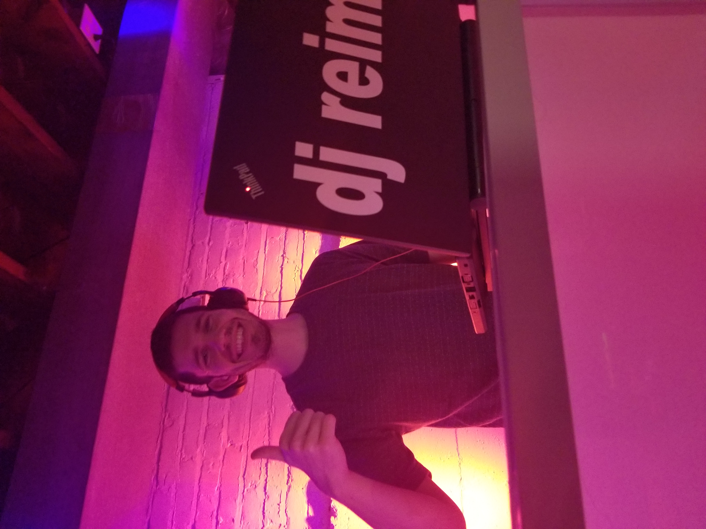
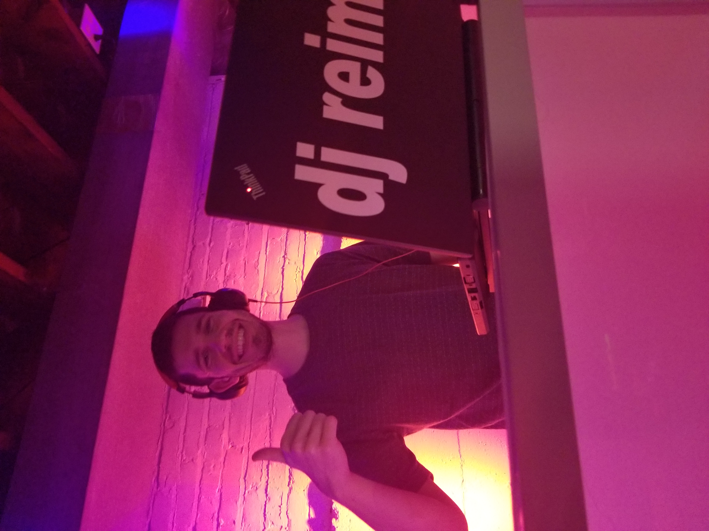

Contact Information:
For future content and bookings, please contact and/or follow DJ Reims by email, Facebook, Instagram, Twitter, TikTok, YouTube, or Snapchat.
- Email - sreimer240@gmail.com
- Facebook - DJ Reims
- Instagram - djreimsofficial
- Twitter - @DjReims
- TikTok - @djreims
- YouTube - DJ Reims
- Snapchat - Sreimer78 (DJ Reims)

 
